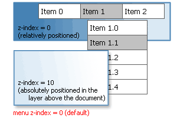

| CONTEXT HELP |
|---|
| Z-index |
|
 Sets initial z-index of the menu to make it appear in correct layer. When page has absolutely positioned HTML elements (layers) covering the menu items, the problem can be resolved by setting the z-index of the menu to the value higher than z-index of the conflicting elements. Browsers often have a problem with z-index of the windowed controls such as form elements and flash movies. These elements always appear on top of all other elements no matter what z-indexes are used. Tigra Menu GOLD has mechanisms to overcome this problem. Please see the product documentation for more details. Some additional information can also be found in the support forum By default the initial z-index of the menu is set to 0 (document level) |